Débora Malqui
באתי מעיצוב מוצר ומשיווק קלאסי. היום אני מנהלת קמפיינים בגוגל ובמטא עם מדידה ב-GA4, קידום בגוגל ובמנועי בינה מלאכותית, ואוטומציות עם AI.
מספרים אמיתיים מאחורי כל השקעה, עם מוצר משלי. נסו אותו.
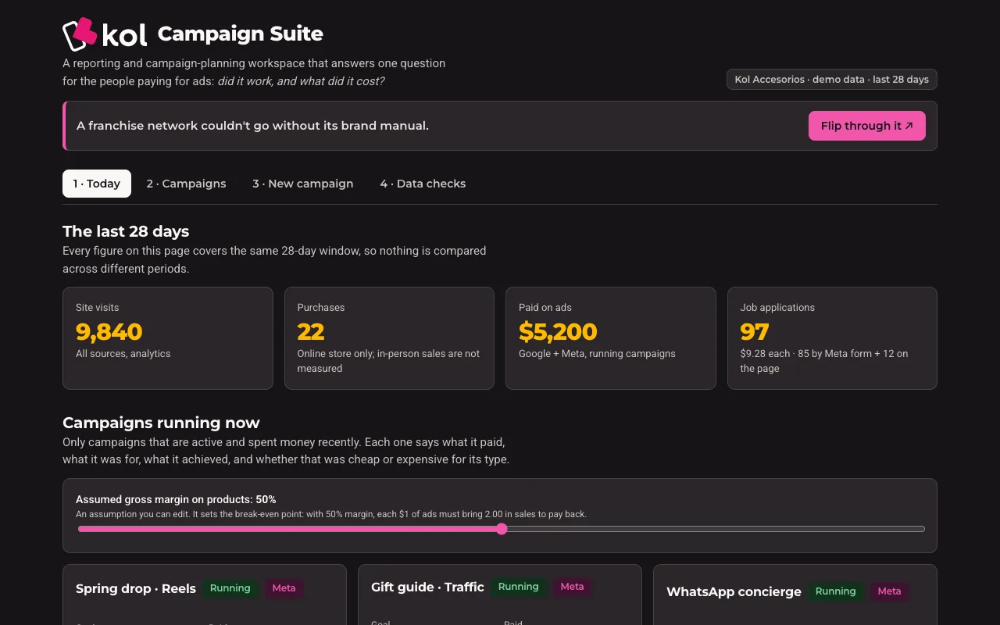
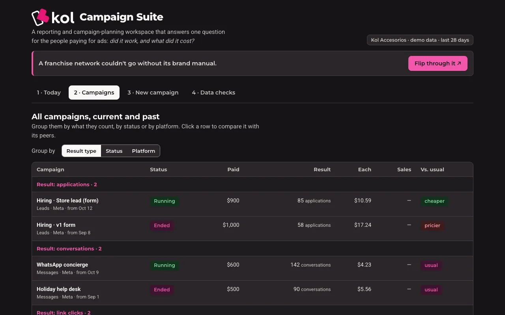
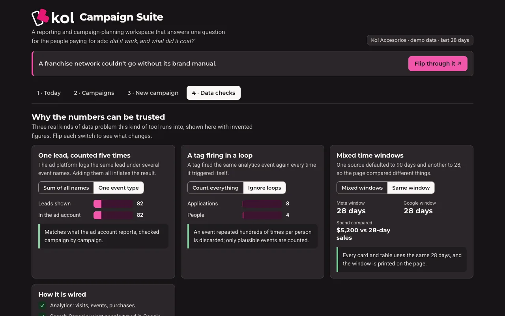
- +69 %ביקורים באתר ב-28 ימים
- 505מועמדויות ב-28 ימים
- 410 → 82לידים, כשהשגיאה כבויה
מקרי בוחן
קמפיינים, אוטומציות ומוצרים דיגיטליים.
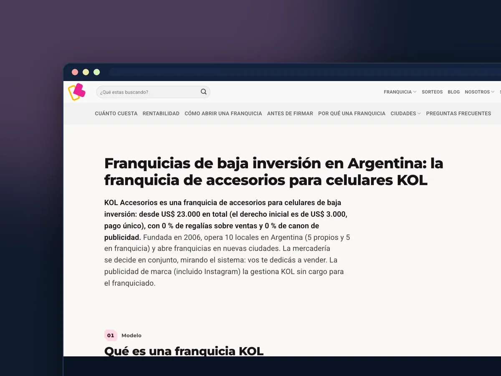
Kol Accesoriosקמפייני Meta ו-Google שמביאים מועמדים וביקורים2024–היום · קמפיינים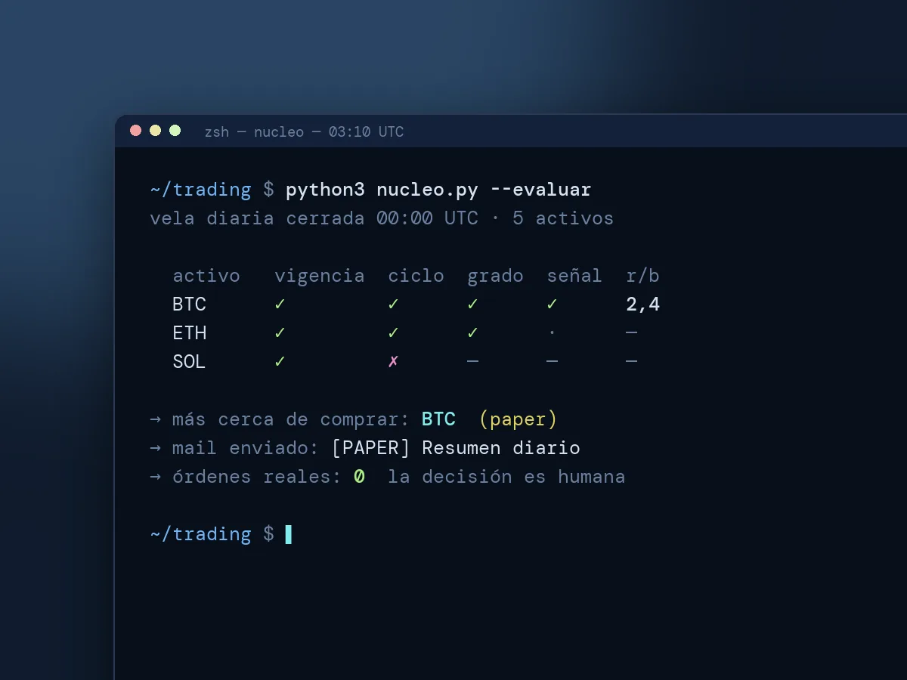
מערכות טריידינגאוטומציה מקצה לקצה: שווקים במעקב והתראות במייל2025–היום · אוטומציה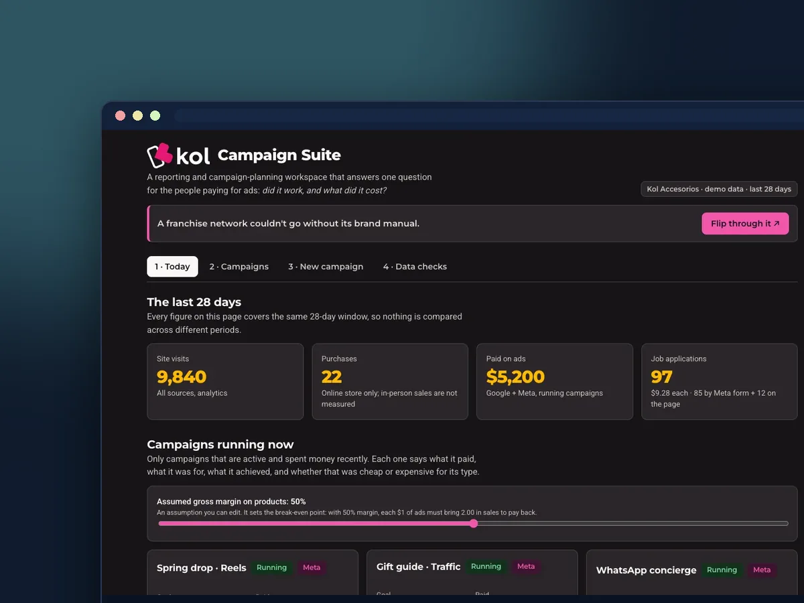
Campaign Suiteהדשבורד שמאפשר לכל הצוות לראות מה מביא כל קמפיין2026 · מוצר · מדידה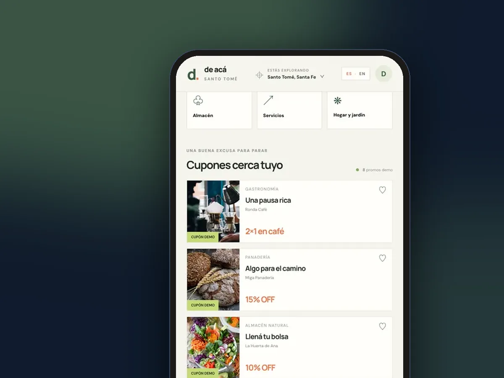
Santo Toméאפליקציית ווב של הטבות, מהעיצוב ועד ההשקה והמדידה2024–25 · מוצר · השקה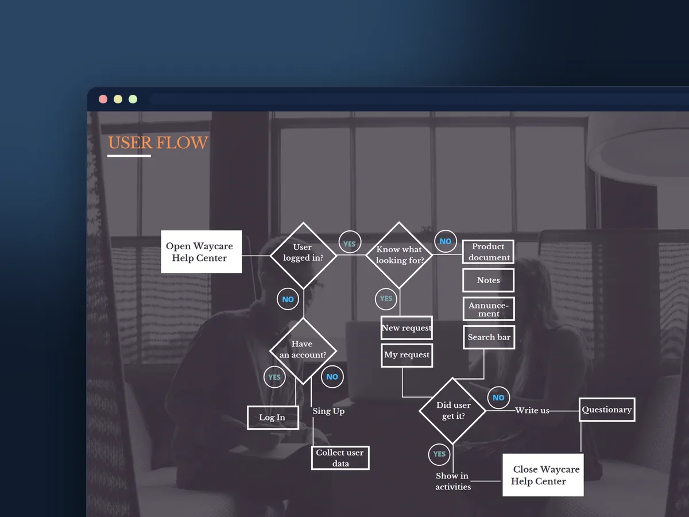
Waycareטבלת נתונים ניתנת לסינון לפלטפורמת תנועה מבוססת AI2019 · UX/UI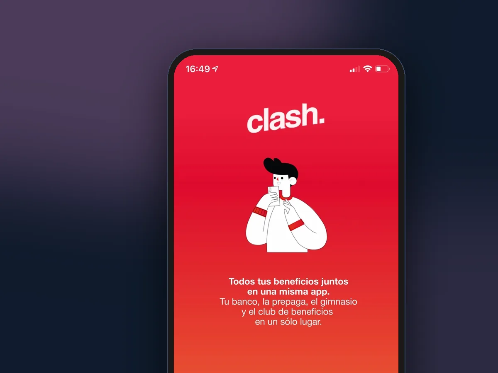
Clashהאונבורדינג של אפליקציה שמרכזת את כל ההטבות שלך במקום אחד2021 · UX/UI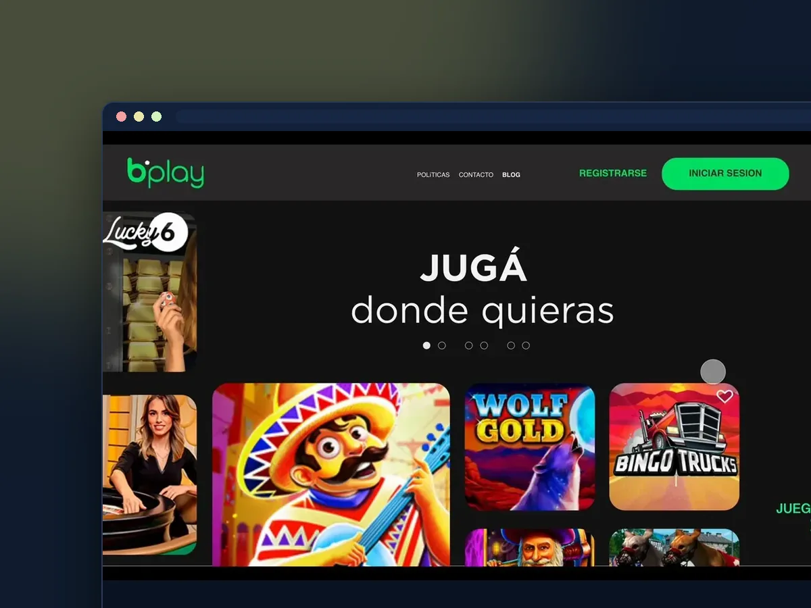
Bplayהרשמה עם שלוש שאלות והמתנה שמיידעת2022 · UX/UI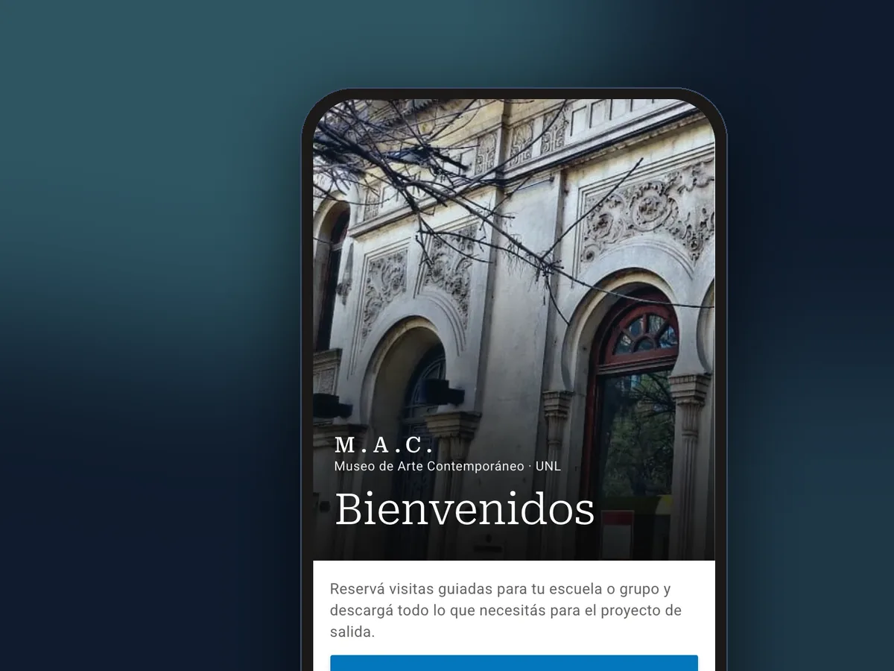
MAC, מוזיאון UNLהזמנת ביקור של בית ספר, כולל הניירת2022 · UX · אקדמי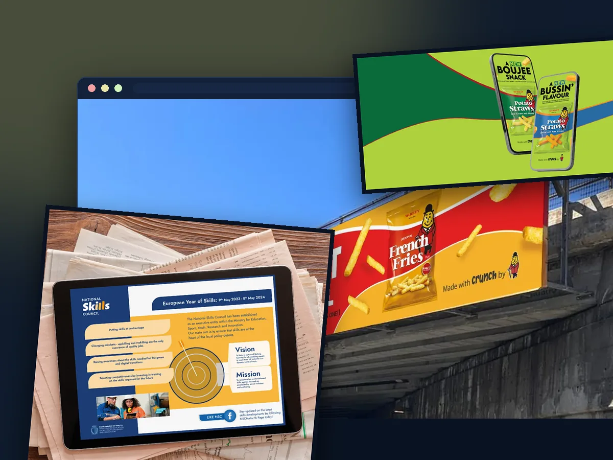
Communiquéשלושה מותגים, כל מדיה: קמפיינים של סוכנות במלטה2022–23 · קמפיינים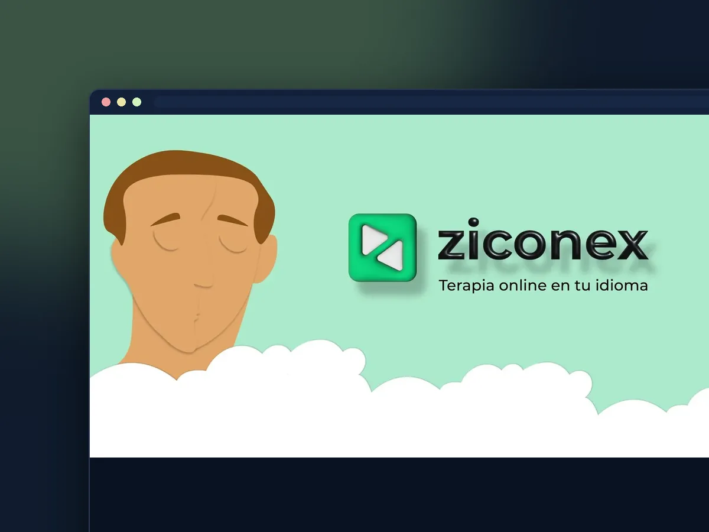
Ziconexמותג אחד, פיד אחד ומערכת מודעות לטיפול אונליין בספרדית2023 · מוצר · מותג+69 %ביקורים באתר
+60 %רכישות בחנות
505מועמדויות ב-28 ימים
קמפיינים
קמפיינים שמביאים מועמדים וביקורים
505 מועמדויות ב-28 ימים ועלייה של 69 % בביקורים באתר, עם קמפייני Meta ו-Google לרשת אביזרים.
לקריאת מקרה הבוחן
מוצר · מדידה
הדשבורד שמאפשר לכל הצוות לראות מה מביא כל קמפיין
מוצר המדידה שלי: מהמנכ"ל ועד כל מחלקה, כולם רואים כמה עלה כל קמפיין ומה הוא הביא.
לקריאת מקרה הבוחןהכרה ושיתופי פעולה
2
פרסים מקומיים בעיצוב
עבודות קורס מהתואר השני
שמונה עבודות קורס מהתואר השני בפרסום אסטרטגי ודיגיטלי (אוניברסיטת אריאל): מחקר, קמפיינים, תוכניות תקשורת ומדיה, ניתוח ומסה. אלו עבודות אקדמיות, לא הזמנות של המותגים.
01Adidas Pulseהצעה אסטרטגית כדי ש-adidas תופיע איפה שמחפשים היום: גוגל, עוזרי AI ורשתות חברתיות2026 · SEO · GEO02i24NEWS בהודומהאזנה חברתית וסקר למותג ולקמפיין לכניסה להודו2025–26 · מחקר · קמפיין03Skyline Residencesתוכנית מדיה של 10 מיליון ₪, בשלושה שלבים, למכירת 100 דירות יוקרה2025 · תוכנית מדיה04CeraVe «Find Your Balance»מיני-קמפיין על הרווחה הרגשית של נערות2026 · קמפיין · תוכן05«Bring Them Home Now»איך קמפיין של אקטיביזם חזותי הופך משבר למשהו אישי2025 · ניתוח חזותי06«The Engagement Paradox»מסה על מי אחראי לאלגוריתמים שבוחרים מה אנחנו רואים2026 · מסה · אתיקה07Wixתוכנית תקשורת של שישה חודשים ו-70 פעולות כדי לעבור מ«קל» ל«מקצועי»2025–26 · תקשורת משולבת08SEGAקמפיין יוצרים בשלוש רמות לחזרה של סוניק2025 · יוצרים · בריף